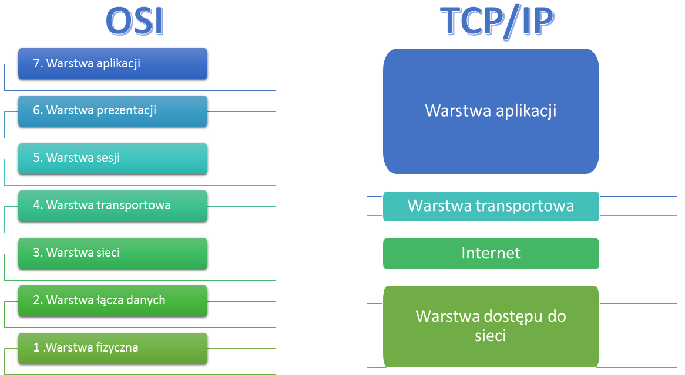
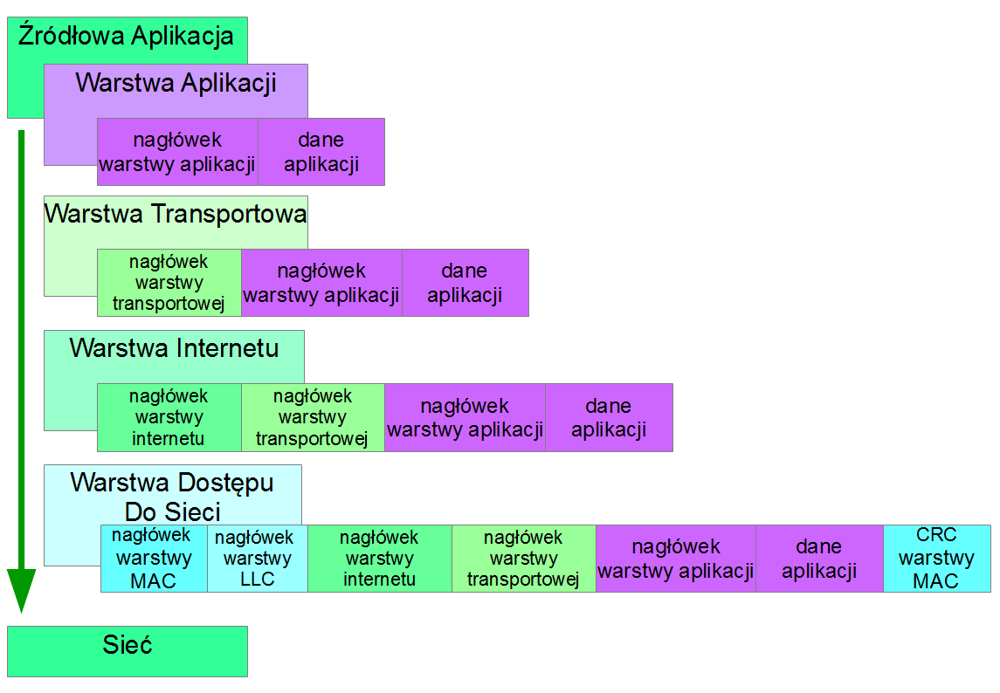
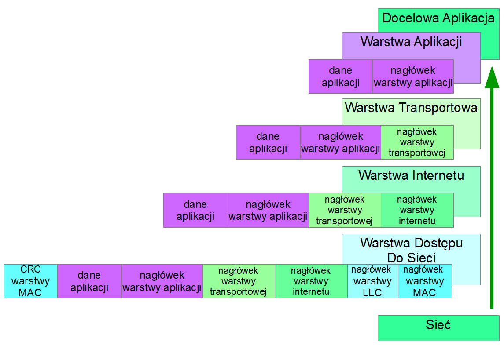

Protokół to zbiór procedur oraz reguł rządzących komunikacją, między co najmniej dwoma urządzeniami sieciowymi. Istnieją różne protokoły, lecz nawiązujące w danym momencie połączenie urządzenia muszą używać tego samego protokołu, aby wymiana danych pomiędzy nimi była możliwa. W celu komunikacji między różnymi protokołami wykorzystuje łącza (ang. gateway) - czyli urządzenia, które tłumaczącą rozkazy jednego protokołu na drugi. Należy pamiętać, że używanie łącz może spowolnić w znacznym stopniu komunikację pomiędzy systemami. Kolejnym rozwiązaniem może być skonfigurowanie komputerów w taki sposób, by wykorzystywały kilka protokołów równocześnie, jednak i to rozwiązanie może prowadzić do dodatkowego obciążania sieci.
Do najważniejszych protokołów sieciowych należą:
TCP/IP
UDP
SLIP
PPP
TCP/IP (ang. Transmission Control Protocol / Internet Protocol) - to zespół protokołów sieciowych używany w sieci Internet. Najczęściej wykorzystują go systemy Unixowe oraz systemy Windows, choć można stosować go również w systemach Novell NetWare. Zadanie protokołu TCP/IP polega na dzieleniu danych na pakiety odpowiedniej wielkości, ponumerowaniu ich w taki sposób, aby odbiorca mógł sprawdzić, czy dotarły wszystkie pakiety oraz ustawieniu ich we właściwej kolejności. Kolejne partie informacji wkładane są do kopert TCP, a te z kolei umieszczane są w kopertach IP. Oprogramowanie TCP po stronie odbiorcy zbiera wszystkie nadesłane koperty, odczytując przesłane dane. Jeśli brakuje którejś koperty, wysyła żądanie ponownego jej dostarczenia. Pakiety wysyłane są przez komputery bez uprzedniego sprawdzenia, czy możliwa jest ich transmisja. Może się zdarzyć taka sytuacja, że do danego węzła sieci, gdzie znajduje się router, napływa więcej pakietów, aniżeli urządzenie może przyjąć, posegregować i przesłać dalej. Każdy router posiada bufor, który gromadzi pakiety czekające na wysłanie. Gdy bufor ulegnie całkowitemu zapełnieniu, nowo nadchodzące pakiety zostaną odrzucone i bezpowrotnie przepadną. Protokół, który obsługuje kompletowanie pakietów zażąda więc wtedy ponownego ich wysłania. 
wysyłanie wiadomości w tcp/ip
odbieranie wiadomości tcp/pi
UDP Drugim popularnym protokołem używanym w warstwie transportowej jest UDP (ang. User Datagram Protocol lub Universal Datagram Protocol). Jest to prostszy protokół, w którym komunikacja odbywa się bez nawiązywania żadnego stałego połączenia pomiędzy aplikacjami. Wszystkie pakiety wysyłane są niezależnie od siebie. Dzięki swojej prostocie UDP jest szybsze niż TCP. Z drugiej jednak strony, nie zapewnia takiej niezawodności działania jak TCP. Przede wszystkim UDP nie gwarantuje, że wiadomości rzeczywiście dotarły do odbiorcy. UDP nie dostarcza pakietów w takiej samej kolejności, w jakiej zostały one wysłane. Ciężar uporządkowania otrzymywanych wiadomości i sprawdzenia czy nie nastąpiły błędy transmisji spoczywa na otrzymującej je aplikacji.
Nagłówek UPD Nagłówek UPD składa się z 8 bajtów, jest więc znacznie krótszy niż odpowiadający mu nagłówek TCP.
SLIP (ang. Serial Line Internet Protocol) – protokół używany dawniej przy połączeniach modemowych (połączenie wdzwaniane, ang. dial-up). Obecnie niemal całkowicie zastąpiony przez nowszy i bardziej elastyczny protokół PPP. Działanie protokołu sprowadza się do definicji sposobu ramkowania danych. Nie istnieje wykrywanie ani naprawa błędów. Jedynym jego celem jest wysyłanie pakietów na łącze szeregowe. Protokół SLIP obsługuje wyłącznie transmisje datagramów protokołu IP (maksymalna długość 1006 bajtów), kapsułkowanych w swoich ramkach. Transmisja ta może się odbywać zarówno w łączach synchronicznych jak i asynchronicznych.
CSLIP (ang. Compressed SLIP) to wersja protokołu SLIP, która kompresuje dane przed transmisją.
Źródło Źródło